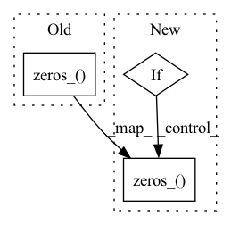

Pattern ID :1476
Before Change
for n, m in self.named_modules():
if "fc" in n and isinstance(m, nn.Linear):
nn.init.zeros_( m.weight)
if m.bias is not None:
nn.init.zeros_(m.bias)
elif isinstance(m, nn.Conv2d):
// as per discussion with paper authors, original in haiku isAfter Change
for n, m in self.named_modules():
if "fc" in n and isinstance(m, nn.Linear):
if cfg.zero_init_fc:
nn.init.zeros_( m.weight)
else:
nn.init.normal_(m.weight, 0., .01)
if m.bias is not None:
nn.init.zeros_(m.bias)In pattern: SUPERPATTERN
Frequency: 3
Non-data size: 3
Instances Fragment ID: 4063391
Project Name: feng-lab/pytorch-image-models
Commit Name: cb06c7a910cb9b1078679bc67c76afcbb7453d3c
Time: 2021-02-12
Author: rwightman@gmail.com
File Name: timm/models/nfnet.py
M Class Name: NormalizerFreeNet
N Class Name: NormFreeNet
M Method Name: __init__(8)
N Method Name: __init__(8)
M Parent Class: nn.Module
N Parent Class: nn.Module
M File Name: timm/models/nfnet.py
N File Name: timm/models/nfnet.py
M Start Line: 303
M End Line: 365
N Start Line: 424
N End Line: 494
Before Change
self.temporal_conv = nn.Conv1d(dim_out, dim_out, kernel_size = temporal_kernel_size, padding = temporal_kernel_size // 2)
nn.init.dirac_(self.temporal_conv.weight.data) // initialized to be identity
nn.init.zeros_( self.temporal_conv.bias.data)
def forward(
self,
x,After Change
self.temporal_conv = nn.Conv1d(dim_out, dim_out, kernel_size = temporal_kernel_size) if kernel_size > 1 else None
self.kernel_size = kernel_size
if exists(self.temporal_conv):
nn.init.dirac_(self.temporal_conv.weight.data) // initialized to be identity
nn.init.zeros_( self.temporal_conv.bias.data)
def forward(
self,
x, Fragment ID: 4063389
Project Name: lucidrains/imagen-pytorch
Commit Name: a22bf63574fb59f8c0532d1bb1b708384ddda76b
Time: 2022-12-11
Author: lucidrains@gmail.com
File Name: imagen_pytorch/imagen_video/imagen_video.py
M Class Name: PseudoConv3D
N Class Name: Conv3d
M Method Name: __init__(4)
N Method Name: __init__(2)
M Parent Class: nn.Module
N Parent Class: nn.Module
M File Name: imagen_pytorch/imagen_video/imagen_video.py
N File Name: imagen_pytorch/imagen_video/imagen_video.py
M Start Line: 357
M End Line: 364
N Start Line: 351
N End Line: 369
Before Change
// Initializing weights
nn.init.kaiming_normal_(self.Conv.weight.data)
nn.init.zeros_( self.Conv.bias.data)
def forward(self, x, w):
assert len(x.shape) == 4
After Change
self.AdaIN2 = AdaIN(self.latent_size, out_channels)
// Initializing weights
if not first_block:
nn.init.xavier_normal_(self.Conv1.weight.data)
nn.init.zeros_( self.Conv1.bias.data)
nn.init.xavier_normal_(self.Conv2.weight.data)
nn.init.zeros_(self.Conv2.bias.data) Fragment ID: 4063392
Project Name: maximkm/stylegan-anime
Commit Name: eb986e15dc4ff37c57a5f5b9566a29f06ce30eca
Time: 2021-08-22
Author: maximkmwo@gmail.com
File Name: models/StyleGAN.py
M Class Name: BlockG
N Class Name: BlockG
M Method Name: __init__(7)
N Method Name: __init__(6)
M Parent Class: nn.Module
N Parent Class: nn.Module
M File Name: models/StyleGAN.py
N File Name: models/StyleGAN.py
M Start Line: 133
M End Line: 134
N Start Line: 111
N End Line: 140